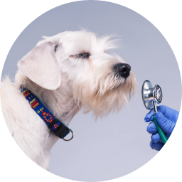

Early prediction
prevention and control of
genetic diseases
myPETGENE is a genetic testing service that helps keep your pets healthy and happy.
genetic diseases of your companion animals at an early stage, so you can prevent diseases through customized care solutions such as improvement of eating habits and exercise. It is also possible to prevent loss and abandonment of companion animals by proving individual identification and blood ties with the corresponding DNA.
Early prediction
prevention and control of
genetic diseases

Breeding of healthy
companion animals
Prevention of loss with the identification of an individual animal.
마이펫진 검사
Disease Confirmation

myPETGENE genetic disease test is performed to diagnose or predict genetic disease in companion animals. If there is a family history of genetic disease or signs of symptoms, testing can help you in early diagnosis, prevention, treatment, and health management, even though there are no symptoms at the moment. The test is designed to extract the DNA of companion animals and analyzes whether there are genetic mutations or structural abnormalities related to specific diseases to confirm the possibility of genetic diseases. As genetic information composed of DNA, a gene has a special command system encoded to make proteins. However, when a gene is mutated due to various causes, the normal protein is not formed, which causes a disease. These mutations are either inherited from parents or acquired, and myPETGENE can obtain genetic disease information by identifying mutation factors inherited from parents.
DNA Certificate

myPETGENE identifies the genotype through STR (Short Tandem Repeat) analysis, which shows a difference in the number of repetitions in the nucleotide sequence of a specific locus. DNA certificate, also known as DNA profiling, is a method of extracting DNA from a companion animal's sample to reveal their unique genetic pattern. It compares and analyzes the genetic locus of two samples to identify whether the DNA is from the same object, and the DNA is stored for future confirmation in case the animal ever goes missing. It is also used as a certificate to verify the genotype of companion animals in case of disputes of ownership for companion animals.
Paternity Confirmation

myPETGENE paternity test is designed to compare and analyze the unique genotypes of companion animals' DNA to prove their blood relationship between parents and offspring. Since DNA is genetic material, offspring inherit the same genotype from each parent and form a pair. The certificate proves the paternity in a scientific way by confirming that the genotypes match each other.
Gender Confirmation

More than 50% of birds around the world are similar in appearance to males and females, so it is difficult to determine their gender by identification. Just as human chromosomes identify XX as female and XY as male, the sex chromosomes of birds consist of Z and W. A bird's sperm contains one Z chromosome, and the egg contains either Z or W, so the gender is determined by the egg. Females have ZW with heterozygous chromosomes, and males have ZZ with homozygous chromosomes. Therefore, it is possible to distinguish the gender by checking the sex chromosome differences between males and females through DNA analysis.